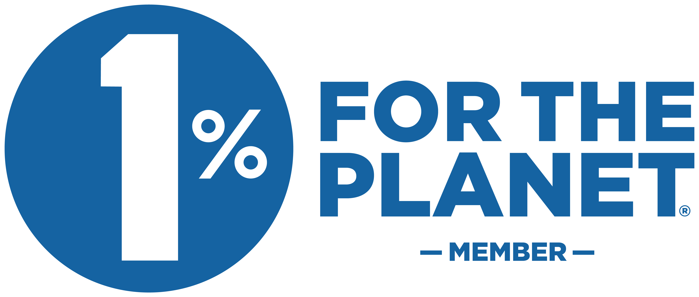
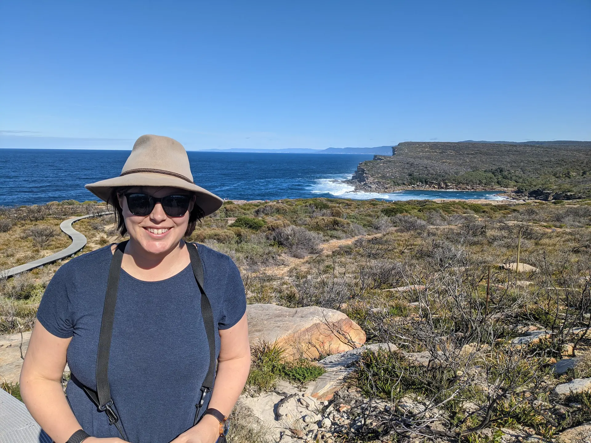
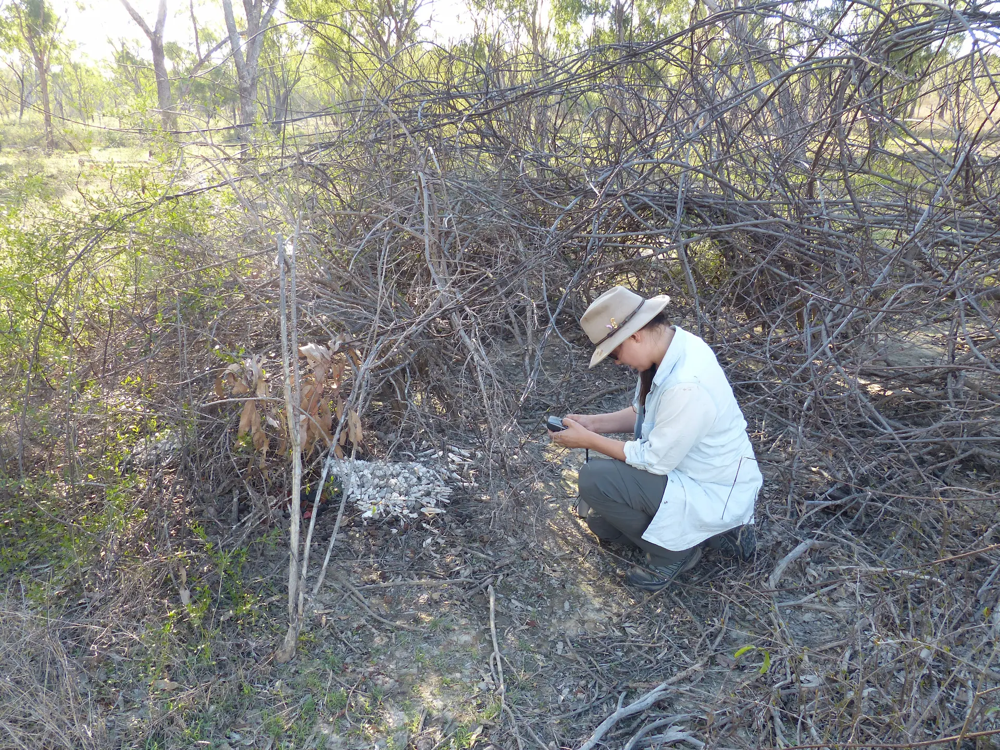

Stripe Climate Initiative Supporting Echidna Research, UQ Animal Rescue Services, Hervey Bay QLDA fundraising and impact consultancy rooted in ecology, systems thinking, and a deep respect for the people doing the work on the ground.
The name Keystone comes from ecology. A keystone species is one that plays a crucial role in keeping an ecosystem stable — not by dominating it, but by supporting the conditions that allow everything else to function and thrive.
That idea sits at the heart of our mission.
We are a fundraising and impact consultancy grounded in science, systems thinking, and a deep respect for the people doing the work on the ground.

Like a keystone species, our work is about stability over visibility. When the systems behind an organisation are strong, everything else has room to thrive — people, programs, partnerships, and impact.
Our founder, Dr Jess Hodgson, began her career as a conservation ecologist, working in research and mission-led organisations where funding pressure, reporting demands, and limited capacity were a constant reality.
Again and again, the same pattern emerged: passionate, capable teams doing critical work — while struggling to keep up with grants, impact data, recognition, and donor communication. Not because they lacked commitment or expertise, but because the systems behind their work were stretched too thin.
Over time, it became clear that fundraising support isn't just about securing money. It's about creating stability — the kind that allows organisations to plan, adapt, and stay focused on their mission without burning out the people holding it together.
Keystone Impact Solutions grew from that realisation.

"My story begins in Australia's wild places — tracking spoonbills by kayak, working in conservation at CSIRO, and living my dream as a field ecologist. What truly fueled me wasn't just the fieldwork. It was making my team twice as efficient and watching that tangible impact dissolve all my imposter syndrome."Dr Jess Hodgson — Founder, KIS
We believe that strong missions deserve strong systems behind them. Our role is not to take centre stage, but to strengthen the foundations — quietly, carefully, and with intention.
Fundraising, data, and operations shouldn't exist in silos. When they work together, everything becomes more sustainable.
And pressure shapes decisions. We reduce operational noise so you can lead with intention rather than react to urgency.
Hands-on, embedded support — not arm's length advice — is what actually moves organisations forward.
People, programs, partnerships, and impact all flourish when the systems behind an organisation are working well.
Today, we provide end-to-end fundraising and impact services for non-profits and purpose-led businesses, including grants, awards, fundraising operations, data analysis, and donor email marketing.
From opportunity identification through to writing, submission, and follow-up. We pursue funding that genuinely aligns with your mission, capacity, and stage of development.
Strategic identification and end-to-end writing to build credibility, visibility, and funder confidence — without performative storytelling.
Practical support to stabilise fundraising workflows, documentation, reporting, and internal processes so nothing falls through the cracks.
Turning your existing data into clear, defensible insights that support funding, reporting, and decision-making.
Strategic email systems that support fundraising, donor retention, and relationship-building over time.
Like a keystone species, our work is about creating the conditions for everything else to thrive — people, programs, partnerships, and impact. That's the work we care about. And that's why Keystone Impact Solutions exists.